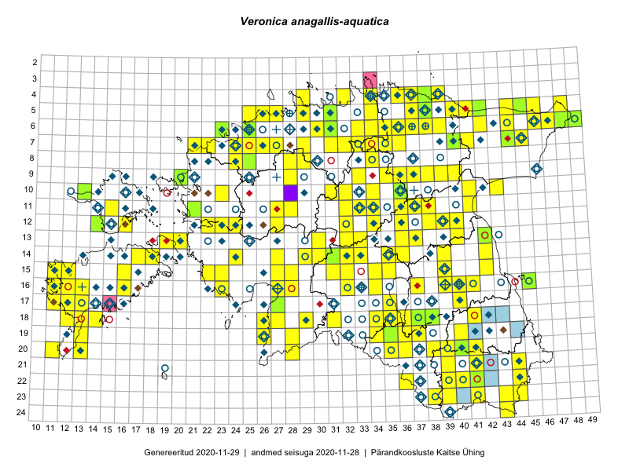

Veronica anagallis-aquatica
Uuendatud: 2016-12-02
Kaardile koondatud taksonid: Veronica anagallis-aquatica L.

Kaart põhineb 114 vaatlusel. Taksonit on leitud 104 ruudust.
Kuvatud viited 20 esimesele andmebaasikirjele, ülejäänud PlutoFis
- Thea Kull: 2015-07-07: 16-40: ala
- Tiit Hallikma, Toomas Kukk: 2015-07-21: 05-45: ala
- Peedu Saar, Ott Luuk: 2015-06-21: 14-42: ala
- Peedu Saar: 2015-07-15: 15-39: ala
- Ott Luuk, Peedu Saar: 2015-08-13: 24-43: ala
- Peedu Saar, Eerik Leibak: 2015-07-30: 15-42: ala
- Peedu Saar, Eerik Leibak: 2015-07-30: 16-41: ala
- Ott Luuk, Peedu Saar: 2015-08-12: 23-43: ala
- Peedu Saar, Liina Oja: 2015-07-21: 06-44: ala
- Ott Luuk, Toivo Sepp: 2015-07-12: 10-31: ala
- Toomas Kukk, Tiit Hallikma: 2015-06-10: 15-31: ala
- Toomas Kukk, Tiit Hallikma: 2015-06-01: 07-45: ala
- Peedu Saar: 2015-08-04: 14-36: ala
- Peedu Saar, Eerik Leibak: 2015-08-16: 12-39: ala
- Tiit Hallikma, Toomas Kukk: 2015-07-23: 07-41: ala
- Peedu Saar, Eerik Leibak: 2015-08-18: 11-38: ala
- Ott Luuk, Hannes Pehlak: 2015-07-23: 07-40: ala
- Jana-Maria Habicht, Ester Valdvee: 2015-06-27: 07-34: ala
- Jana-Maria Habicht, Ester Valdvee: 2015-07-20: 07-34: ala
- Jana-Maria Habicht, Ester Valdvee: 2015-06-28: 08-34: ala